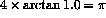

Write a simple program to read in the radius and calculate the area of the corresponding circle and volume of the sphere. Demonstrate correctness by calculating the area and volume using radii of 2, 5, 10 and -1.
Area of a circle,
Volume of a sphere,
Hint 1: place the READ, the area calculation and the PRINT statement in a loop as follows. A program template (which is available by clicking here) is given below.
DO
PRINT*, "Type in the radius, a negative value will terminate"
READ*, radius
IF (radius .LT. 0) EXIT
... area calculation
PRINT*, "Area of circle with radius ",&
radius, " is ", area
PRINT*, "Volume of sphere with radius ",&
radius, " is ", volume
END DO
END
In this way when a negative radius is supplied the program will terminate.
Hint 2:  . in Fortran 90 is ATAN.